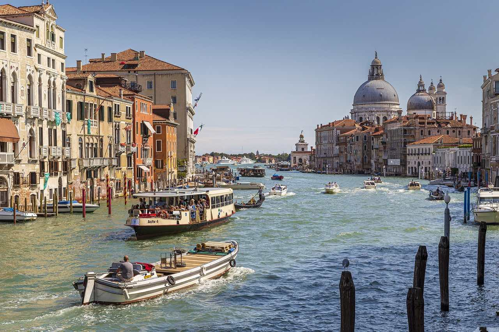

Un paseo por el viejo Oporto
Dignissim placerta vel aenean porta, magna ac sclerisque facilis rhoncus est! Urna pulvinar dolor lorem
purus dapibus quis vut! Hac nunc vel ridiculus enim magnis mid phasellus! Duis et pellentesque lacus
urna diam? Sed phasellus, pellentesque mauris ac phasellus lacus augue enim! Penatibus, porta, sit dis
et adipiscing eu, nisi ac.

Un paseo por Venencia
Venecia, la capital de la región de Véneto en el norte de Italia, abarca más de 100 islas pequeñas en
una laguna del mar Adriático. No tiene caminos, sino solo canales, incluida la vía pública del Gran
Canal, bordeada de palacios renacentistas y góticos. En la plaza central de San Marcos, se encuentra la
basílica de San Marcos, que tiene un suelo de mosaicos bizantinos, y el campanario Campanile con vista a
los techos rojos de la ciudad.

Un paseo por Roma
Roma, la capital de Italia, es una extensa ciudad cosmopolita que tiene a la vista casi 3,000 años de
arte, arquitectura y cultura de influencia mundial. Las ruinas antiguas como las del Foro y el Coliseo
evocan el poder del antiguo Imperio Romano. La ciudad del Vaticano, sede central de la Iglesia católica
romana, cuenta con la Basílica de San Pedro y los Museos del Vaticano, que albergan obras maestras como
los frescos de la Capilla Sixtina de Miguel Ángel.